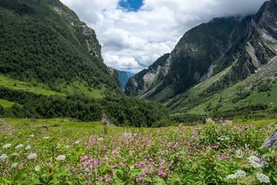
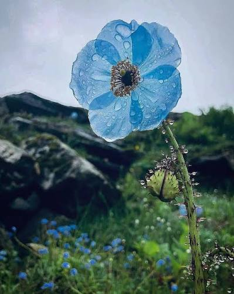
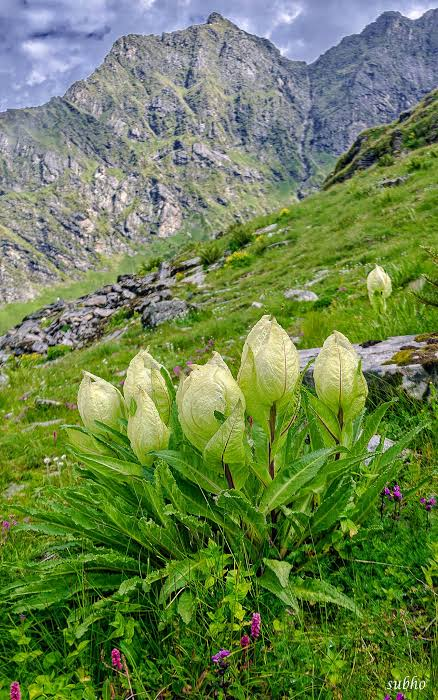
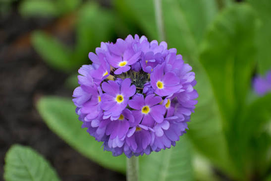
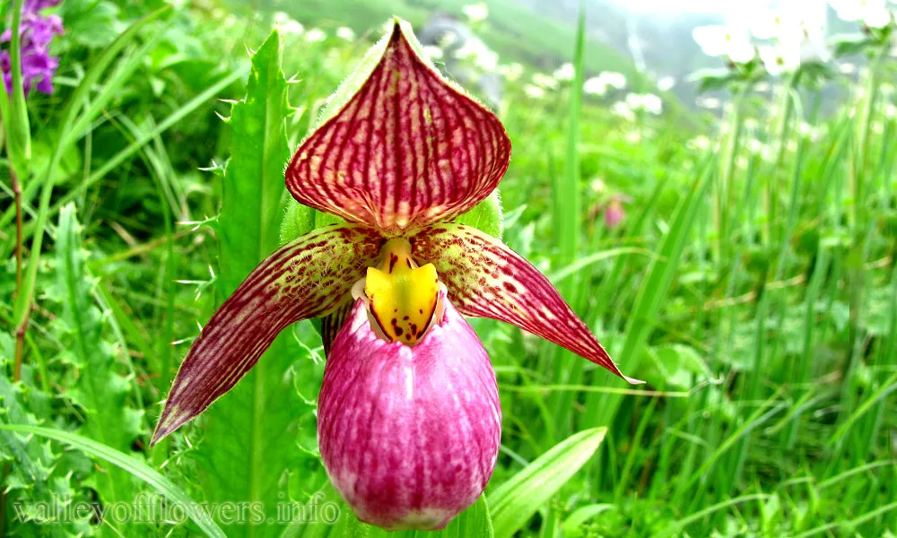
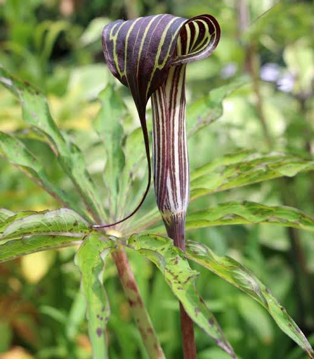

Western Himalayas
Located in Chamoli district, Uttarakhand, within the Nanda Devi Biosphere Reserve region.
High in the Himalayas, an alpine meadow bursts into colour during the short summer flowering season.
Open field notes ↓
30° 43′ NThe Valley of Flowers lies in Uttarakhand's Himalayas. Its meadows support diverse alpine plants, insects, and other wildlife in a fragile high-altitude ecosystem.
Located in Chamoli district, Uttarakhand, within the Nanda Devi Biosphere Reserve region.
Many flowers bloom during the warmer months, when snow melts and conditions allow plants to grow.
The valley is part of a UNESCO World Heritage property recognised for its exceptional alpine flora.
A few notable Himalayan flowers. Swipe horizontally to explore the collection.

Meconopsis betonicifolia

Saussurea obvallata

Primula

Cypripedium himalaicum

Arisaema consanguineum
High-altitude ecosystems can be sensitive to trampling, waste, and changes in climate. Conservation helps protect the plants and the ecological relationships that make the valley special.
Visitors should follow park rules, remain on permitted trails, and leave flowers where they grow.
Next wonder: Living Root Bridges ↗